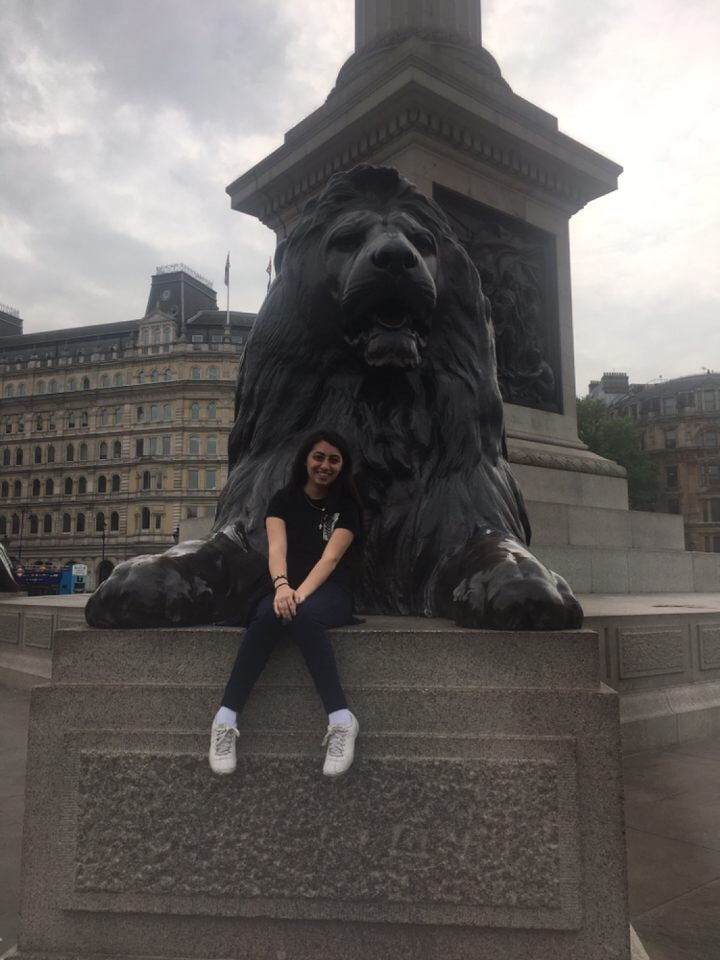
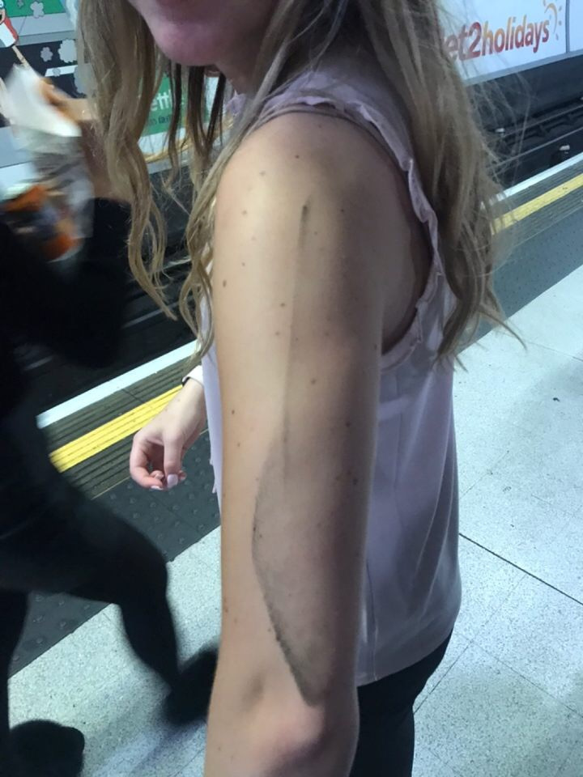
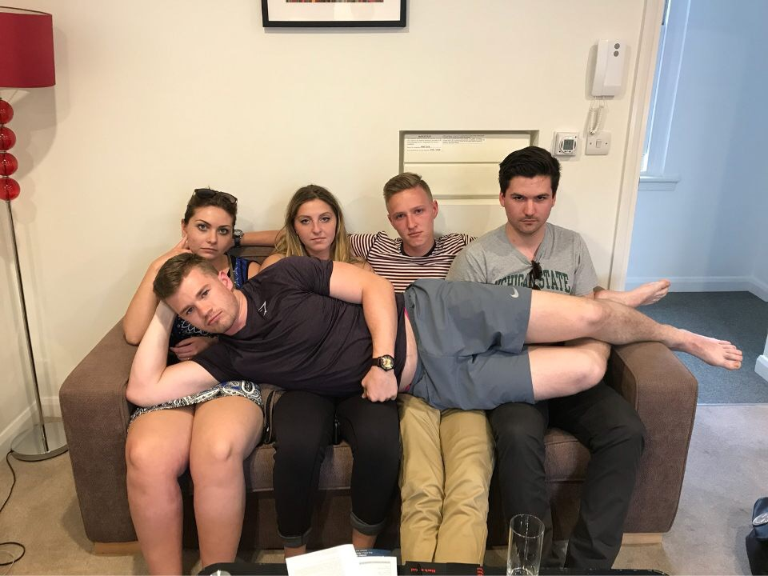

With a threat of rain in the forecast, Engle decided to switch up the plans for the day and begin the walking tour of London first, followed by luncheon at Harrods and finishing inside at the National Portrait Gallery, Trafalgar Square. One thing made very clear to the group the night before was that this would be a day that involved a LOT of walking. Naturally, then, the girls decided to sport their 4” wedge shoes for the day “for a great look.” Despite the looks and warnings of the gentlemen, the group set out upon their journey of 20,000 steps.
The day began with a departure from 2A toward the West Kensington station. In less than one city block, under the two-minute mark, Jenna already had her 4” wedges in hand and walking barefoot. The District Line got us to Trafalgar Square in record time. There we enjoyed several streets artists (Dr. Engle apparently is the only patriotic one amongst us, moved to tears by a chalk-drawing of Old Glory on the sidewalk). We all took turns having our image taken with the huge bronze lions in front of the monument. Obviously, the next logical question one would have to ask is "are the lions anatomically correct?". Answer - impressively so.
Stephanie and the Bronze Lions in Trafalgar Square

The next stop was the Horse Guards Parade and the end of the Mall. If one would learn nothing else from reading this, let them learn that the English say the word "Mall" fairly incorrectly. If one would want to sound like a local, all they must do is pretend they are on a first name basis with Mr. Mao Zedong whenever the Mall comes up in conversation. Mall = Mao. Here at the Mall, we caught our first glimpse of the royal guard, some mounted on horseback and others standing like statues on display. We shared sad feelings that these soldiers were mere tourist spectacles. For many tourists heard OFF! shouted at them when they got too close or too handsy. To our mutual surprise, the most common demographic taking the opportunity to get inappropriately handsy with these fine blokes was middle-aged women. The worlds finest "Susan"s, "Linda"s and maybe even a few "Barbara"s were all on vacation from everyday life and apparently also from globally agreed upon social and cultural standards of conduct.
It was here that the group witnessed a defining moment in English history: Nic saved England. Though the guards are supposed to be non-communicative, whilst Nic was posing for a tourist picture with one, Nic heard a guard initiate a question to him. Stunned, Nic dared to ask the guard to repeat himself. For a second time, the guard spoke: “I say, are the horses past?”. Nic stammered “yes” and the rest is history. England was saved, the Queen still alive. Despite his heroism, he did not score an invitation to the Queen’s garden party that afternoon.
The group then strolled through St. James Park. We identified and called many ducks, and learned about the cushy life of a Royal Swan. The meandering sidewalk led us to St. James Palace, and to our first real look at the notorious Tudor architectural style. Dr. Engle pointed out a small, non-tourist-known, door that led to the Chapel Royale. But then it was time to face the tourists at Buckingham Palace. The buddy system ensured we all made it through the masses, with Pat, the “Caboose” doing double-duty, We made it to the Queen’s gift shop for a pit stop and power-shopping. Most notably, Dr. Engle and his gaggle of stuffed Korgi's.
Dr. Engle's Gaggle of Korgis
Then it was time for lunch at Harrod’s. But how to arrive? City Mapper promised a bus link, and it delivered, but it would be a 30-minute ride. Why not “just walk”? Led by City Mapper, we strolled through Kensington and saw lavish apartments and embassies. Here Jenna started to bleed profusely from her heels. As we arrived at the world’s largest department store, Jenna’s feet were covered and caked in the wounds she had endured in the name of a better education. She limped straight for the shoe department for a new pair of walking shoes.
The boys split off to marvel at the store’s massive size and luxury, including walnut-carved bathroom stalls. Chase almost bought a $250,000 watch. Pat was taken by a new pair of $13,000 alligator shoes. Credit cards safely stowed, the group assembled in the food court at 2:00 pm. Engle took mercy on the girls with wedges and succumbed to taking the tube back to Trafalgar Square. There we escalated to the top floor to see the royal portraits we had studied, even the immense and infamous King Henry VIII codpiece. He may have even given the anatomically correct bronze lions a run for their money. We can only hope. We also discovered many unstudied heroes of England, such as Sir William Reid Dick. After insightful Engle commentary walking and descending to the ground floor through the labyrinth corridors, Stephanie found yet another gift shop.
But, Hark!, what is that sound? Like a moth to a flame, Engle ran—blindly—across the rush-hour traffic to St. Martin in the Fields church where a chamber orchestra and choir were indeed rehearsing. Though a ticketed event, Engle got us in for free just as the strains of Handel’s Zadok the Priest filled the baroque church. Exhausted, stunned, and bleeding, the group fell into the over-stuffed upholstered chairs across the street in the Chandos lounge. Most ordered our trip's signature G&T’s (double!) and a pick-me-up of cold carrot soup. We tubed back to Richmond Court for a quick refresh, and walked to a local Pizzeria for a memorable meal; despite the fact that they offered no “burger” pizza for Engle.
However, this is not to suggest the day was without unfortunate drama. On the way home (from Chandos to the Pizzeria) some of the group choose not to board a train as instructed by Engle. Their choice not to enter the train as directed brought down the full furor of the professor. Chase, Patrick, Annika, Sarah, and Nic tried blaming their upbringing. they tried blaming their socio-economic climate. But in the end, they simply could not escape the wrath of the "time out couch". They learned an important lesson about public transit that day - to be better at it.
After a round-table at the flats, and after Jenna was bandaged, the day was over with 18,000 steps logged on our fit-bits.
Here Lies the Aftermath of Failing to Board the Tube

Taking Time to Reflect on the Time Out Couch
